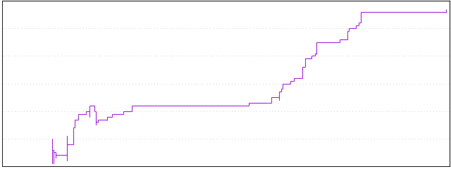

Files
General
Activity
Authors
Files
Lines
Tags
Total files
56
Total lines
1065
Average file size
97787.29 bytes
File count by date

Extensions
Extension
Files (%)
Lines (%)
Lines/file
md
1 (1.79%)
2 (0.19%)
2
txt
8 (14.29%)
1060 (99.53%)
132
xlsm
46 (82.14%)
16610 (1559.62%)
361
xlsx
1 (1.79%)
50 (4.69%)
50